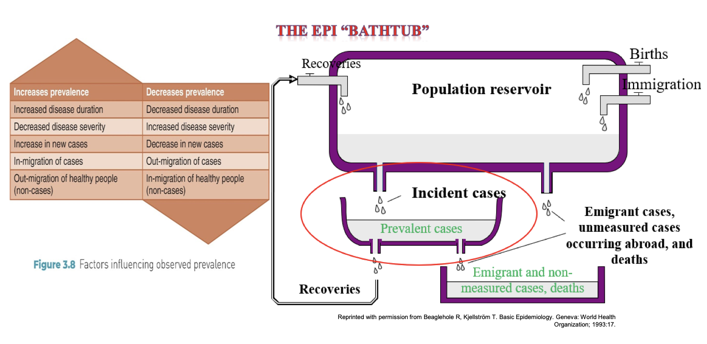

Measures of Disease Occurrence
APHS 20203 • Epidemiology & Biostatistics
Objectives
By the end of this week, students will be able to:
- Define counts versus rates.
- Distinguish crude, specific, and adjusted rates.
- Compute and interpret prevalence and incidence, including cumulative incidence (CI) and incidence rate (IR).
- Interpret key mortality measures: crude death rate (CDR), cause-specific mortality rate (CSMR), case-fatality rate (CFR), and proportional mortality ratio (PMR).
Measures for Comparison
Counts and Rates
What Does Epidemiology Ask?
Are exposure and outcome linked?
Exposure \(\longleftrightarrow\) Outcome
Open-ended question: Describe a health issue you have heard about recently. What might be the exposure? What is the outcome?
Exposure
- What is the exposure?
- Who are the exposed?
- What are the exposure’s potential health effects?
Outcome
- Who is getting disease?
- Where is disease occurring?
- When is disease occurring?
- How do we measure disease frequency?
- What are the potential contributing factors?
Example: Count vs. Rate
| First-class men |
|
57 |
|
| First-class women |
|
140 |
|
| First-class children |
|
5 |
|
| First-class total |
|
202 |
|
| Second-class men |
|
14 |
|
| Second-class women |
|
80 |
|
| Second-class children |
|
24 |
|
| Second-class total |
|
118 |
|
| Third-class men |
|
75 |
|
| Third-class women |
|
76 |
|
| Third-class children |
|
27 |
|
| Third-class total |
|
178 |
|
| Total |
|
498 |
|
In terms of the physical space occupied by each class of passengers, first- and second-class cabins were much closer to the boat deck, where the lifeboats were located, than third-class cabins were.
Table 1. Likelihood of survival based on class and gender. Raw data from Tokis (1999).
Use of Epidemiologic Measures
| Magnitude: how much |
Risk: how likely |
| Simple tally |
Population-based |
| Planning |
Comparison |
Discussion: Counts vs. Rates
Think of a real-world public health or health-related example.
- In what situation would using a count be more appropriate?
- In what situation would using a rate be more appropriate?
- Does a bigger number always mean higher risk? Why or why not?
Crude, Specific, and Adjusted Rates
- Crude rates: The big picture
- Specific rates: Zooming in
- Adjusted rates: Fair comparisons
Crude Rates: Initial Comparison
What are they?
- Total cases divided by the total population in a given time period
What are they good for?
- Quick, overall comparisons between populations
Key limitation
- Crude rates do not account for population differences such as age.
Crude Rates Example
| 10-20 |
20,000 |
5,000 |
200 |
30 |
| 20-30 |
40,000 |
5,000 |
150 |
20 |
| 30-40 |
15,000 |
10,000 |
50 |
40 |
| 40-50 |
10,000 |
10,000 |
20 |
20 |
| 50-60 |
5,000 |
15,000 |
15 |
90 |
| 60-70 |
5,000 |
25,000 |
10 |
150 |
| 70-80 |
3,500 |
20,000 |
20 |
250 |
| 80-90 |
1,500 |
10,000 |
35 |
200 |
| Total |
100,000 |
100,000 |
500 |
800 |
\[\text{Crude rate (Youngtown)}=\frac{500}{100{,}000}\times 100{,}000=500\]
What stands out about the age distribution in each town?
Discussion
Scenario: Consider two towns with the same population but different death rates in 2022:
- Youngtown: 500 deaths per 100,000 people
- Oldtown: 800 deaths per 100,000 people
Questions:
- Does Oldtown’s higher crude death rate mean it is less healthy than Youngtown?
- What population characteristic might explain this difference?
Specific Rates: Zooming into Subgroups
What are they?
- Rates calculated for a specific subgroup, such as age, sex, or occupation
Why use them?
- To understand who is most affected
- To identify differences hidden in crude rates
Common examples
- Age-specific death rate (ASDR)
- Sex-specific disease rate
Age-Specific Death Rate
| 10-20 |
20,000 |
5,000 |
200 |
30 |
1,000 |
600 |
| 20-30 |
40,000 |
5,000 |
150 |
20 |
375 |
400 |
| 30-40 |
15,000 |
10,000 |
50 |
40 |
333 |
400 |
| 40-50 |
10,000 |
10,000 |
20 |
20 |
200 |
200 |
| 50-60 |
5,000 |
15,000 |
15 |
90 |
300 |
600 |
| 60-70 |
5,000 |
25,000 |
10 |
150 |
200 |
600 |
| 70-80 |
3,500 |
20,000 |
20 |
250 |
571 |
1,250 |
| 80-90 |
1,500 |
10,000 |
35 |
200 |
2,333 |
2,000 |
| Crude total |
100,000 |
100,000 |
500 |
800 |
500 |
800 |
\[\text{ASDR}_{\text{YT, ages 10-20}}=\frac{200}{20{,}000}\times 100{,}000=1{,}000\]
Why Can’t We Stop at Age-Specific Rates?
- Age-specific rates show where differences occur.
- Comparing many age groups across large populations is messy.
- We still want one number to compare populations.
- Standardized or adjusted rates answer: What would the rate be if populations were structured the same way?
Standardized Rates Make Fair Comparisons
What are they?
- Rates adjusted to account for differences in population structure, such as age
Why use them?
- To compare populations fairly
- To remove the effect of different age distributions
How are they created?
- Apply each population’s specific rates to a common standard population.
Standardize Population Structure
- Choose a standard population age distribution.
- Use the standard proportions as weights.
- Apply the weights to each population’s age-specific rates.
- The result is an adjusted rate, as if the populations had the same age structure.
Age-Adjusted Death Rate
\[\text{Age-adjusted death rate}=\sum\left(\text{ASDR}\times\text{standard proportion}\right)\]
| Under 1 year |
0.015343 |
0.017151 |
0.013818 |
| 1-4 years |
0.064718 |
0.067265 |
0.055317 |
| 5-14 years |
0.170355 |
0.200506 |
0.145565 |
| 15-24 years |
0.181677 |
0.174406 |
0.138646 |
| 25-34 years |
0.162066 |
0.122569 |
0.135573 |
| 35-44 years |
0.139237 |
0.113614 |
0.162613 |
Disease Occurrence
Prevalence and Incidence
Measuring Disease Occurrence
Two core measures answer different epidemiologic questions:
- Prevalence: How widespread are existing cases?
- Incidence: How often do new cases occur?
Both can be crude or specific rates.
Prevalence: The Snapshot
\[P=\frac{C}{N}\]
What is prevalence?
- The proportion with a condition at a point or during a period in time
- Includes existing cases
- Ranges from 0% to 100%
Types of prevalence
- Point prevalence: Existing cases at a point in time
- Period prevalence: Anyone who was a case at any time during the period
Prevalence Examples
Point prevalence
Prevalence of colds in this class as of today:
- Number of cases: 3
- Class population: 100
- Prevalence: \(3/100\)
- Percentage: \(3/100\times100\%=3\%\)
Period prevalence
Eye examination survey, 1979-1981:
- 310 people had cataracts.
- 2,477 people were surveyed.
- Prevalence: \(310/2{,}477=0.125\)
- Percentage: \(12.5\%\)
Use of Prevalence Data
What is prevalence useful for?
- Describing current burden
- Planning healthcare services
- Monitoring chronic conditions
Limitation
- Prevalence does not measure the risk of developing disease.
Epi Group Presentation Prep 1
Incidence: New Cases Over Time
What is incidence?
- Measures new cases only
- Focuses on people at risk
- Captures disease onset
Two forms of incidence
- Cumulative incidence (CI): Risk, expressed as a proportion, over a time period
- Incidence rate (IR): Rate of occurrence that accounts for person-time
Cumulative Incidence
What it measures: The risk, or proportion, of developing a disease over a specified time period
- Numerator: Number of new cases during the time period
- Denominator: Population at risk at the start of the period
Key distinction from prevalence
- Cumulative incidence includes new cases only and measures risk.
- Prevalence includes existing cases and measures burden.
Limitation: Cumulative incidence does not adjust for people who enter late or leave early.
Example: Cumulative Incidence
Scenario
- Flu season: Jan-Apr
- 100 elementary students healthy on Jan 1 and at risk
- Same setting: crowded classrooms
- All followed for 4 months
- 10 students get flu
\[CI=\frac{\text{new cases}}{\text{at risk at start}}=\frac{10}{100}=10\%\]
Interpretation: 10% developed flu during Jan-Apr.
When Follow-Up Time Matters
When CI is not appropriate
- Some people enroll late, some leave early, and absences vary.
Why CI fails here
- Different follow-up time means different time exposed, or time at risk.
- People do not share the same starting point or exposure window.
Use instead
- Use the incidence rate based on person-time when follow-up varies.
Incidence Rate Tracks New Cases Over Time
\[IR=\frac{N}{PT}\]
- Measures the speed of new cases
- Uses person-time (PT): the total time each person is at risk and observed
- Example: Person A contributes 1 year, Person B contributes 2 years, and Person C contributes 2 years, for a total of 5 person-years.
- Stop counting person-time when disease occurs, a person is lost to follow-up, or the study ends.
Incidence Rate Example
- New cases: 3
- Total person-time: 102 person-years
- \(IR=3/102=0.029\) per person-year
- \(IR=2.9\) per 100 person-years
Interpretation: Over the study period, the disease occurred at a rate of 2.9 new cases per 100 person-years.
In plain language: For every 100 person-years of follow-up, about 3 new cases were observed.
Pain Relief Study: Follow-Up Data
Study setup
- 10 patients receive the new drug and 10 receive the old drug.
- Patients are observed for 10 hours.
- X indicates pain relief; O indicates no relief by hour 10.
| New |
1, 1, 1, 1, 2, 3 |
4 |
\(4(1)+2+3+4(10)=49\) |
| Old |
7, 7, 7, 7, 8, 9 |
4 |
\(4(7)+8+9+4(10)=85\) |
Pain Relief Study: Questions
- Which drug provides faster relief? Answer in one sentence.
- What is the cumulative incidence of relief by 10 hours for each drug?
- What is the incidence rate of relief per 100 person-hours for each drug?
Pain Relief Study: Answer
Cumulative incidence by 10 hours
- New drug: \(6/10=60\%\)
- Old drug: \(6/10=60\%\)
Incidence rate
- New drug: \(6/49=12.2\) per 100 person-hours
- Old drug: \(6/85=7.0\) per 100 person-hours
Conclusion: The new drug is faster because it has a higher incidence rate and less waiting time, even though cumulative incidence is the same. The outcome is beneficial.
Use of Incidence Data
Why incidence matters
- Measures risk
- Tracks outbreaks
- Evaluates interventions
- Complements prevalence
Factors Affecting Prevalence

Source: Beaglehole and Kjellstrom (1993), p. 17.
Mortality: Overview
Mortality rate: The frequency of death in a population over time
Mortality rates are used to:
- Compare populations
- Track trends
- Identify leading causes of death
Crude Death Rate: The Simplest Measure
Definition
- Crude death rate (CDR) equals all deaths in a time period divided by the total population.
- Express CDR per 1,000 or 100,000 people.
- Use the mid-year population as the reference population denominator.
\[CDR=\frac{\text{number of deaths in a given year}}{\text{reference population at mid-year}}\times100{,}000\]
Key point: CDR is a quick summary, but it is affected by age and sex structure.
Sample calculation for the United States in 2020:
\[\frac{3{,}383{,}729}{331{,}449{,}520}\times100{,}000=1{,}020\text{ per }100{,}000\]
Specific or Adjusted Death Rate
Specific death rate, such as age- or sex-specific
- Compare within the same subgroup.
- Example: deaths per 100,000 among people age 65 and older
Adjusted or standardized death rate
- Combines age-specific rates using a standard population.
- Compares populations as if they had the same age structure.
Quick discussion: Two cities have the same crude death rate, but one city is older. What measure would you use next - specific or adjusted - and why?
Cause-Specific Mortality Rate
Definition
- Deaths from a specific cause divided by the population
- Used to rank or compare leading causes of death
\[CSMR=\frac{\text{deaths from cause X}}{\text{mid-year population}}\times100{,}000\]
Sample calculation: Disease X in City A, 2023
- Deaths from Disease X: 150
- Mid-year population: 500,000
- \(CSMR=150/500{,}000\times100{,}000=30\) deaths per 100,000
Case-Fatality Rate
Definition
- Deaths among diagnosed cases divided by total cases during a period
- Used to measure severity: the probability of death among cases
\[CFR=\frac{\text{deaths among cases}}{\text{total cases}}\times100\%\]
Sample calculation: Disease X in City A, 2023
- Diagnosed cases: 1,500
- Deaths among cases: 150
- \(CFR=150/1{,}500\times100\%=10\%\)
Proportional Mortality Ratio
Definition
- Deaths from cause X divided by all deaths in the same period
- Answers: How important is this cause among all deaths?
- PMR is not a risk rate because it has no population denominator.
\[PMR=\frac{\text{deaths from cause X}}{\text{all deaths}}\times100\%\]
Sample calculation for the United States:
- Heart disease deaths in 2013: 611,105
- All-cause deaths in 2013: 2,596,993
- \(PMR=611{,}105/2{,}596{,}993\times100\%=23.5\%\)
Mortality Comparison Table
| CDR |
All deaths |
Total population |
Overall comparison |
Ignoring age structure |
| CSMR |
Deaths from cause X |
Total population |
Leading causes |
Confusing with PMR |
| CFR |
Deaths among cases |
Total cases |
Severity |
Using a population denominator |
| PMR% |
Deaths from cause X |
All deaths |
Cause contribution |
Treating as risk |
Overview of Mortality Measures
General population
- Annual death rate
- Crude death rates
- Cause-specific death rates
- Adjusted death rates
- Case-fatality rate
- Standardized mortality ratio
- Proportional mortality ratio (PMR%)
- Mortality crossover and mortality time trends
Maternal and infant population
- Maternal mortality rate
- Infant mortality rate
- Fetal mortality
- Fetal death rate
- Late fetal death rate
- Perinatal mortality rate
- Birth rate, such as crude birth rate
- General fertility rate
Key Takeaways: Counts and Rates
- Counts tell us how many events occurred.
- Rates describe events relative to a population and often time.
- A crude rate is an overall snapshot.
- A specific rate describes a subgroup, such as an age or sex group.
- An adjusted rate supports fair comparisons across different population structures.
Key Takeaways: Prevalence and Incidence
- Prevalence measures existing cases and burden.
- Incidence measures new cases and risk.
- Cumulative incidence: What proportion became cases?
- Incidence rate: How fast are new cases occurring? It uses person-time.
- In a stable setting, prevalence depends on incidence and duration: \(P\approx I\times D\).
Key Takeaways: Mortality
- CDR: Overall deaths in a population; affected by age and sex structure
- CSMR: Deaths from a specific cause in the population
- CFR: Deaths among cases; a measure of severity
- PMR%: Share of deaths due to a cause; not a measure of risk
- Use specific or adjusted death rates when populations differ in structure.
Epi Group Presentation Prep 1